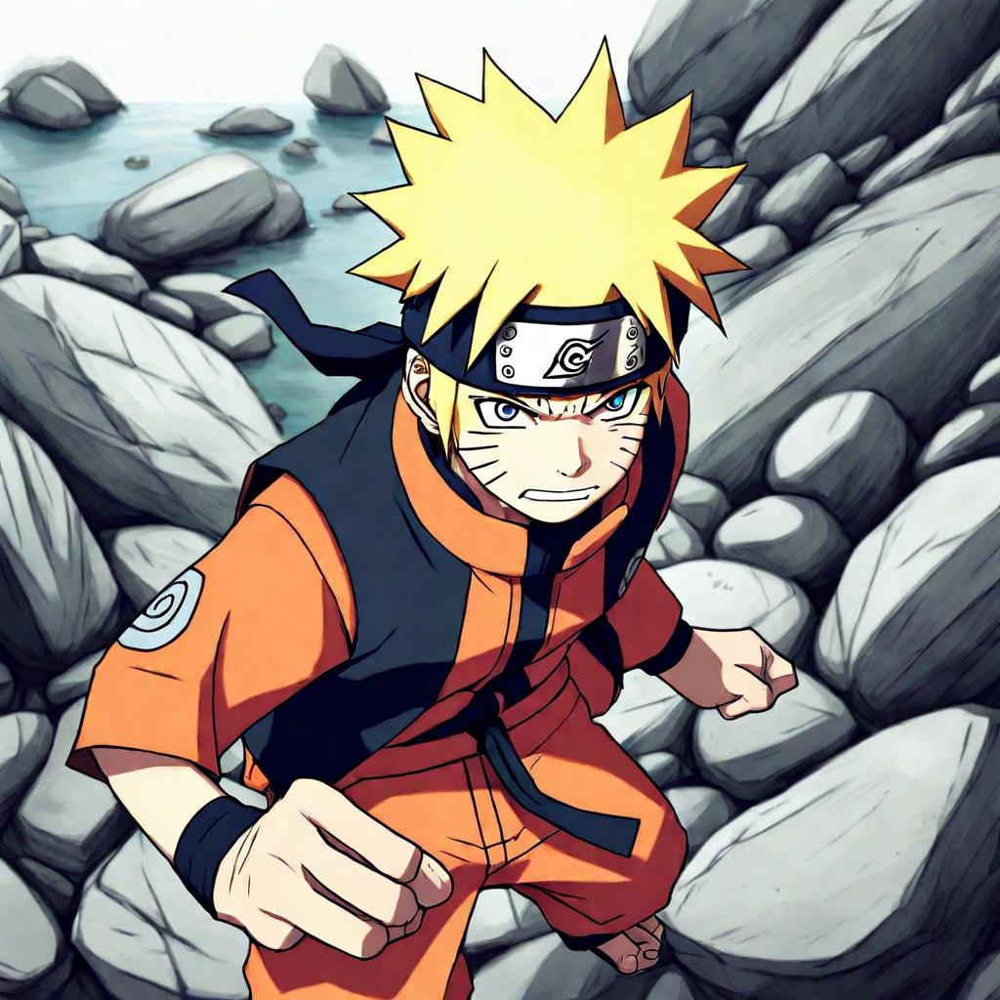

Asian Kung-Fu Generation - Haruka Kanata | Lyrics Meaning and Translation | Sentence for Sentence
"Haruka Kanata" by Asian Kung-Fu Generation is a high-energy song that served as the second opening theme for the anime series Naruto. Known for its driving beat and powerful lyrics, the song captures the intensity and determination of Naruto and his friends as they face various challenges. Asian Kung-Fu Generation, a popular Japanese rock band, brings their distinctive sound and lyrical depth to this track, making it a standout in the series' soundtrack.
In this article, we will explore the lyrics of "Haruka Kanata" sentence by sentence, providing the original Japanese text, Romaji, and English translation. We will also delve into the deeper meaning behind each line, revealing how the song's themes resonate with the journey of the characters in Naruto.
Background of the Song
Release Details
"Haruka Kanata" was released in 2003 and quickly became synonymous with Naruto. It played from episodes 26 to 53, during which some of the series' most pivotal moments unfolded. The song's energetic pace and powerful message made it a perfect match for the action-packed scenes in the anime.
Inspiration and Creation
Asian Kung-Fu Generation is known for their compelling lyrics and dynamic rock sound. "Haruka Kanata," which translates to "Far Away," reflects themes of striving towards distant goals and overcoming obstacles, mirroring the struggles and aspirations of Naruto and his friends. The band's ability to blend meaningful lyrics with a captivating melody has made this song a favorite among fans.
Sentence-by-Sentence Lyrics Breakdown
Verse 1
Sentence 1:
Original Japanese:
踏み込むぜアクセル
Romaji:
Fumikomu ze akuseru
English Translation:
I step on the accelerator
Meaning and Interpretation: This line sets the tone with a sense of urgency and determination, symbolizing a relentless drive towards one's goals.
Sentence 2:
Original Japanese:
駆け引きは無いさ、そうだよ
Romaji:
Kakehiki wa nai sa, sou da yo
English Translation:
There are no tactics, that's right
Meaning and Interpretation: The speaker emphasizes a straightforward, uncompromising approach, reflecting Naruto's direct and earnest nature.
Sentence 3:
Original Japanese:
夜をぬける
Romaji:
Yoru wo nukeru
English Translation:
Passing through the night
Meaning and Interpretation: This line suggests overcoming dark or difficult times, a common theme in Naruto's journey.
Chorus
Sentence 1:
Original Japanese:
心をそっと開いて
Romaji:
Kokoro wo sotto hiraite
English Translation:
Gently open your heart
Meaning and Interpretation: Encourages vulnerability and openness, highlighting the importance of emotional connection.
Sentence 2:
Original Japanese:
ギュっと引き寄せたら
Romaji:
Gyutto hikiyosetara
English Translation:
If you pull it close tightly
Meaning and Interpretation: This line speaks to the power of closeness and holding onto what matters most.
Sentence 3:
Original Japanese:
届くよきっと伝うよもっと
Romaji:
Todoku yo kitto tsutau yo motto
English Translation:
It will reach you, surely, it will convey even more
Meaning and Interpretation: Expresses faith in the power of communication and emotional expression.
Verse 2
Sentence 1:
Original Japanese:
生き急いで搾り取って
Romaji:
Ikiisoide shiboritoru
English Translation:
Living in a hurry, squeezing out
Meaning and Interpretation: Conveys a sense of urgency and intense effort, reflecting the characters' relentless pursuit of their goals.
Sentence 2:
Original Japanese:
縺れる足だけど前より
Romaji:
Motsureru ashi dakedo mae yori
English Translation:
My tangled feet, but more than before
Meaning and Interpretation: Acknowledges struggles and setbacks, yet emphasizes progress and moving forward.
Sentence 3:
Original Japanese:
ずっとそう、遠くへ
Romaji:
Zutto sou, tooku e
English Translation:
Always, towards the distance
Meaning and Interpretation: Highlights the continuous journey towards far-off dreams and aspirations.
Bridge and Outro
Sentence 1:
Original Japanese:
偽る事に慣れた君の世界を
Romaji:
Itsuwaru koto ni nareta kimi no sekai wo
English Translation:
The world you have gotten used to deceiving
Meaning and Interpretation: This line critiques living a life of deceit or pretense, urging for authenticity.
Sentence 2:
Original Japanese:
塗り潰すのさ、白く…
Romaji:
Nuritsubusu no sa, shiroku...
English Translation:
I'll paint it over, white...
Meaning and Interpretation: Symbolizes a fresh start or new beginning, a blank slate to redefine oneself.
Themes and Messages
Major Themes in the Song
- Determination and Drive: The lyrics emphasize relentless effort and moving forward without hesitation.
- Authenticity: The song advocates for genuine living and emotional openness.
- Overcoming Darkness: Reflecting the characters' journeys through challenging times towards their goals.
Resonance with Listeners
The themes of "Haruka Kanata" resonate deeply with listeners, especially fans of Naruto, as they reflect the core values of the series. The song's powerful message and energetic melody inspire determination and hope, much like Naruto himself.
Translation Accuracy and Interpretation
Challenges of Translating Japanese to English
Translating Japanese lyrics to English involves navigating nuances and cultural differences. Certain phrases and emotions may not have direct equivalents in English, requiring interpretive translation to maintain the song's original intent and impact.
Comparison with Other Translations
- Official vs. Fan Translations: Official translations often aim for accuracy and readability, while fan translations may capture more of the song's emotional and cultural context.
- Interpretation Variations: Different translations can offer various perspectives on the song's meaning, enriching the understanding of its themes.
Connection to Naruto
Fit Within the Anime
"Haruka Kanata" is a perfect fit for Naruto, capturing the essence of Naruto's early journey, filled with dreams, determination, and the struggles of a young ninja. The song's high-energy rock style matches the dynamic and action-packed nature of the anime.
Fan Reactions
Fans of Naruto have embraced "Haruka Kanata" as an iconic opening theme, praising its motivational lyrics and memorable melody. The song is often associated with the nostalgic early days of the series, making it a beloved anthem among long-time fans.
Conclusion
In summary, "Haruka Kanata" by Asian Kung-Fu Generation is a powerful and energetic opening theme that perfectly encapsulates the spirit of Naruto. Its meaningful lyrics, driving melody, and connection to the series' core themes of determination, authenticity, and overcoming darkness make it an enduring favorite. By examining the song's lyrics sentence by sentence, we gain a deeper appreciation for its impact and the way it mirrors Naruto's journey. We invite you to share your thoughts and interpretations of "Haruka Kanata" in the comments, and reflect on how this iconic song has inspired you.
Comments